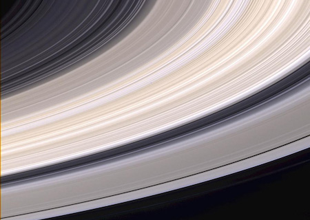

Saturno
Planeta Saturno

Saturno no es el único planeta que tiene anillos, pero definitivamente tiene los más bellos. Los anillos que vemos están compuestos por grupos de pequeños aros que rodean a Saturno. Están hechos de pedazos de hielo y roca. Como Júpiter, Saturno es una pelota de hidrógeno y helio, en gran parte
Cuando Galileo Galilei vio a Saturno a través de un telescopio en el siglo XVII, no estaba seguro de lo que estaba viendo. Al principio, creyó que estaba mirando tres planetas, o un planeta con asas. Ahora, sabemos que esas "asas" eran los anillos de Saturno.
Estructura y superficie
- Es un gigante de gas, como Júpiter. Está compuesto por hidrógeno y helio, sobre todo.
- Tiene una atmósfera densa.
- Cuenta con un precioso grupo de siete anillos separados por espacio entre ellos.
Tiempo en Saturno
- Un día solo dura 10,7 horas.
- Su año equivale a 29 años en la Tierra.
Los vecinos de Saturno
- ¡Tiene más de 50 lunas! Falta confirmar la existencia de varias lunas más.
- Es el sexto planeta contando desde el Sol. Sus planetas vecinos son Júpiter y Urano.
Breve historia
- Se conoce su existencia desde la antigüedad, ya que podemos verlo sin necesidad de usar telescopios avanzados.
- Varias misiones han visitado el planeta rojo, y es el único planeta por donde han circulado los rovers, que se han paseado por Marte tomando fotos y haciendo mediciones.
¿Qué aspecto tiene Saturno?
La nave espacial Cassini tomó esta foto de los anillos de Saturno. Puedes ver los colores grises y tostados.

Esta es una foto de Saturno y sus lunas Tetis y Dione. El Voyager 1 tomó esta fotografía mientras pasaba por allí.

La nave espacial Cassini de la NASA pasó por detrás de Saturno y tomó esta foto en 2013. Puedes ver siete de sus lunas y sus anillos internos. En el fondo, también puedes ver la Tierra.